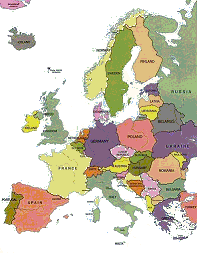
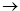
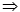

| Coloring the Map, but Not Anyhow |
We want to solve the classical problem of coloring map
regions in such a way that no regions that share a common boundary have been colored with
the same color, assuming that a boundary is a frontier between two regions larger
than a single point.
Let R = {r1, …, rn} be the set of different regions which the map
consists of; b : R x R  Boolean, a function such
that b(ri, rj) = True
iff ri and rj share a common boundary, and C = {c1,
…, ck} the set of available different colors. A solution for this
problem is a mapping S : R C
such that:
b(ri, rj) = True  S(ri) ≠ S(rj), for all ri, rj in R
There exist results that prove that only four different
colors (k = 4) are sufficient to color any flat map considering
the above conditions.
The main difference between this classical problem and
ours is that we shall not accept any solution, but the best one. We shall
assume that the different colors c1, …, ck
are natural numbers whose value is proportional to their dominant position in the spectrum
of visible light. For any two different colors ci
and cj, the larger |ci – cj| is, the more different these colors look to
the eye. We want to obtain the solution that maximizes:
for all ri, rj in R such that b(ri, rj) = True, and i < j.
The input will consist of a set of cases to be solved.
Each case consists of the following input data:
You may assume that the input data correspond to a
feasible flat map, and that no region will be adjacent to (share a boundary with) itself.
A case starting with a line containing a single zero marks
the end of the input data. This case should not be processed nor output issued for it.
For each input case to be solved, the program must issue
an output line with a single number with the value of the best solution, i.e. the maximum
value found for:
for all ri, rj in R such that b(ri, rj) = True, and i < j.
There should appear no blank spaces in the output line
after of before this value.
You may also assume that results will never exceed a 32
bits signed integer number.
5 8 1 4 8 20 1 2 1 3 1 4 2 4 2 5 3 5 4 3 4 5 0
1974